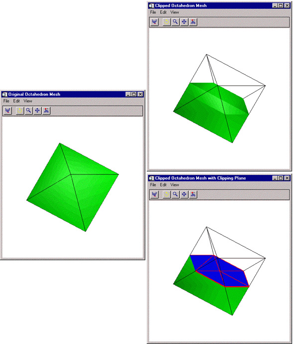

The MESH_CLIP function clips a polygonal mesh to an arbitrary plane in space and returns a polygonal mesh of the remaining portion. An auxiliary array of data may also be passed and clipped. This array can have multiple values for each vertex. The portion of the mesh below the plane, satisfying ax + by + cz + d < 0, remains after the clipping operation.
Result = MESH_CLIP ( Plane , Vertsin , Connin , Vertsout , Connout [, AUXDATA_IN = array , AUXDATA_OUT = variable ] [, CUT_VERTS = variable ] )
The return value is the number of triangles in the returned mesh.
Input four element array describing the equation of the plane to be clipped to. The elements are the coefficients ( a,b,c,d ) of the equation ax + by + cz + d = 0.
Input array of polygonal vertices [3, n ].
Input polygonal mesh connectivity array.
Output array of polygonal vertices.
Output polygonal mesh connectivity array.
Input array of auxiliary data. If present, these values are interpolated and returned through AUXDATA_OUT. The trailing array dimension must match the number of vertices in the Vertsin array.
Set this keyword to a named variable that will contain an output array of interpolated auxiliary data.
Set this keyword to a named variable that will contain an output array of vertex indices (into Vertsout) of the vertices which are considered to be “on” the clipped surface.
This example clips an octahedral mesh (an eight-sided, three-dimensional shape similar to a cut diamond). The original mesh contains one rectangle and eight triangles. The connectivity list is formed with the rectangle listed first followed by the triangles. The mesh is placed in a polygon object, which is added to a model. The model is displayed in the XOBJVIEW utility, which allows you to click-and-drag the polygon object to rotate and translate it. See XOBJVIEW for more information on this utility.
When you quit out of the first XOBJVIEW display, the second XOBJVIEW display will appear. This display shows the mesh clipped with an oblique plane. The final XOBJVIEW display shows the results of using the TRIANGULATE routine to cover the clipped area. See TRIANGULATE for more information in this routine.
This example has been split into three parts; click each section to enter the code at the IDL command line.
; Create a mesh of an octahedron.
vertices = [[0, -1, 0], [1, 0, 0], [0, 1, 0], $
[-1, 0, 0], [0, 0, 1], [0, 0, -1]]
connectivity = [4, 0, 1, 2, 3, 3, 0, 1, 4, 3, 1, 2, 4, $
3, 2, 3, 4, 3, 3, 0, 4, 3, 1, 0, 5, 3, 2, 1, 5, $
3, 3, 2, 5, 3, 0, 3, 5]
; Initialize model for display.
oModel = OBJ_NEW('IDLgrModel')
; Initialize polygon and polyline outline to contain
; the mesh of the octahedron.
oPolygon = OBJ_NEW('IDLgrPolygon', vertices, $
POLYGONS = connectivity, SHADING = 1, $
COLOR = [0, 255, 0])
oPolyline = OBJ_NEW('IDLgrPolyline', vertices, $
POLYLINES = connectivity, COLOR = [0, 0, 0])
; Add the polygon and the polyline to the model.
oModel->Add, oPolygon
oModel->Add, oPolyline
; Rotate model for better initial perspective.
oModel->Rotate, [-1, 0, 1], 22.5
; Display model.
XOBJVIEW, oModel, /BLOCK, SCALE = 1, $
TITLE = 'Original Octahedron Mesh'
; Clip mesh.
clip = MESH_CLIP([1., 1., 1., 0.], vertices, connectivity, $
clippedVertices, clippedConnectivity, $
CUT_VERTS = cutVerticesIndex)
; Update polygon with the resulting clipped mesh.
oPolygon->SetProperty, DATA = clippedVertices, $
POLYGONS = clippedConnectivity
; Display the updated model.
XOBJVIEW, oModel, /BLOCK, SCALE = 1, $
TITLE = 'Clipped Octahedron Mesh'
; Determine the vertices of the clipped plane.
cutVertices = clippedVertices[*, cutVerticesIndex]
; Derive the x and y components of the clipped plane's
; vertices.
x = cutVertices[0, *]
y = cutVertices[1, *]
; Triangulate the connectivity of the clipped plane.
TRIANGULATE, x, y, triangles
; Derive the connectivity of the clipped plane from the
; results of the triangulation.
arraySize = SIZE(triangles, /DIMENSIONS)
array = FLTARR(4, arraySize[1])
array[0, *] = 3
array[1, 0] = triangles
cutConnectivity = REFORM(array, N_ELEMENTS(array))
; Initialize the clipped plane's polygon and polyline.
oCutPolygon = OBJ_NEW('IDLgrPolygon', cutVertices, $
POLYGONS = cutConnectivity, SHADING = 1, $
COLOR = [0, 0, 255])
oCutPolyline = OBJ_NEW('IDLgrPolyline', cutVertices, $
POLYLINES = cutConnectivity, COLOR = [255, 0, 0], $
THICK = 3.)
; Add polyline and polygon to model.
oModel->Add, oCutPolyline
oModel->Add, oCutPolygon
; Display updated model.
XOBJVIEW, oModel, /BLOCK, SCALE = 1, $
TITLE = 'Clipped Octahedron Mesh with Clipping Plane'
; Clean-up object references.
OBJ_DESTROY, [oModel]
The results for this example are shown in the following figure. The original octahedron is on the left and the two clipped results are shown to the right.
|
 |
|
5.5 |
Introduced |
MESH_DECIMATE MESH_ISSOLID , MESH_MERGE , MESH_NUMTRIANGLES , MESH_OBJ , MESH_SMOOTH , MESH_SURFACEAREA , MESH_VALIDATE , MESH_VOLUME